MAKING ROADS SAFE
Our global road safety agenda at the 2025 Marrakech Ministerial.
See here for more
OUR WORK
Safe Roads
Climate Action
Clean Air
Safe Motor Sport
Child and Youth Rights
Liveable Cities
SAFE ROADS
The global road traffic injury epidemic kills 3,700 people every day. Many thousands more are seriously injured. Our societies have been persuaded to accept ‘death by car’.
We challenge this. The FIA Foundation supports the ‘Vision Zero’ approach which seeks to redesign transportation to put people first; to engineer and manage highways, streets and vehicles within a ‘Safe System’ where no death or serious injury is accepted. Our funding programme and our advocacy supports this vision.
CLIMATE ACTION
We are living in a time of planetary emergency. Global heating is altering weather systems, threatening habitats, and exacerbating social injustice. We must act now.
At the FIA Foundation we work with leading global policy institutions to reduce the carbon impact of vehicles, designing ambitious policy instruments that aim for zero emissions, and supporting advocacy and research to shift from private car-based mobility to greener alternatives.
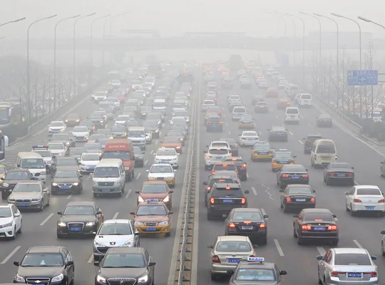
CLEAN AIR
Toxic air pollution contributes to more than 7 million deaths a year and causes serious and long-term ill-health to many millions of people. Vehicle emissions are a major cause.
The FIA Foundation leads a data-driven campaign to spotlight gross-polluting vehicles causing environmental damage in cities across the world, and to enable change by policymakers, car companies and consumers. And we work with other philanthropies in the Clean Air Fund to pool resources and coordinate action.
SAFE MOTOR SPORT
As the global charity of worldwide motor sport, we play a key role in financing cutting-edge safety research.
The halo, HANS, high speed barriers, the F1 helmet, wheel tethers and racing car crash tests: we’ve helped to deliver them all. Through funding for medical specialists, race marshals, and grassroots safety training developing the next generation of young racers – boys and girls - the FIA Foundation supports the FIA’s ‘vision zero’ to eliminate death and serious injury in motor sport.
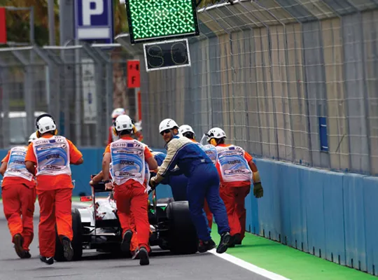
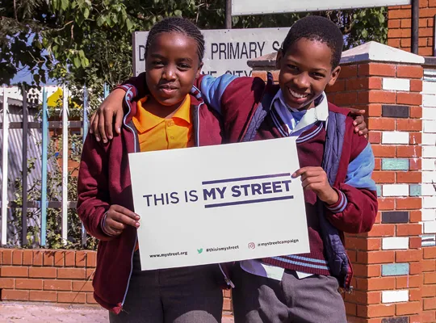
CHILD AND YOUTH RIGHTS
Young people bear the impact of decisions taken by adults. Road traffic crashes are the leading global cause of death for children and youth aged 5-18.
More than 300 million children breathe dangerously toxic air every day. Today’s children are inheriting a world threatened by climate change and damaged by social inequity. Through our Child Health Initiative, the FIA Foundation works with young people to enable their voice and ideas in the policy arena.
LIVEABLE CITIES
Cities are growing rapidly in the Global South. It is in these megacities that the fight for safe streets, climate, clean air and social justice must be won.
The FIA Foundation is leading ground-breaking research on women’s needs, rights and safety in urban public transportation; funding policy change for children and youth and action on low-speed streets through our Advocacy Hub; targeting vehicle emissions and promoting zero carbon mobility through our environmental partnerships.
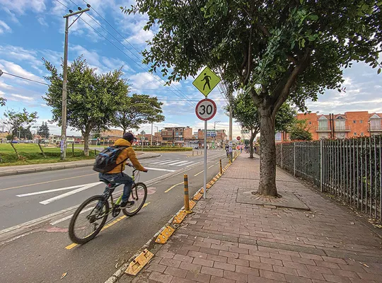
Latest news
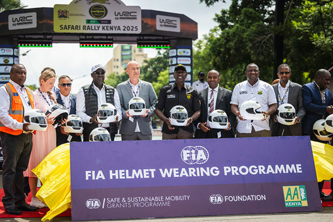
Motorcycle helmet focus at FIA Safari Rally Kenya with President Ruto
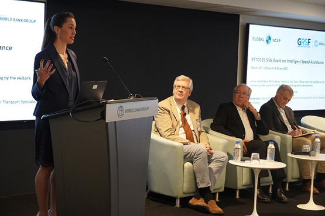
Smart Speed, Safer Streets: World Bank and Global NCAP accelerate Intelligent Speed Assistance momentum
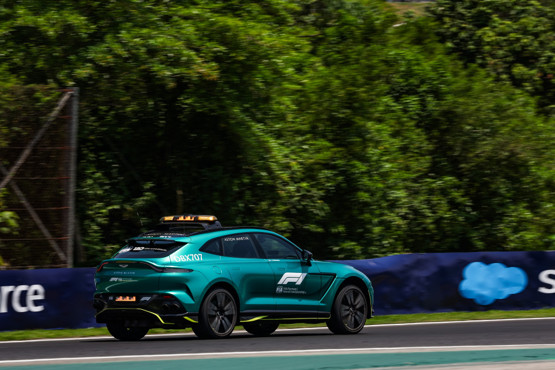
New motorsport medicine e-learning modules launched, supported by the FIA Foundation
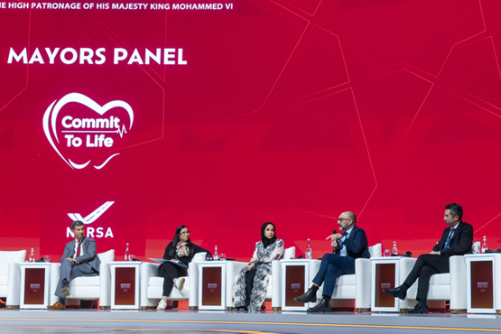
FIA Foundation rallies final push to 2030 at Morocco Global Ministerial Conference on Road Safety
Making Roads Safe - Active philanthropy for global road safety
The FIA Foundation supports road safety interventions and campaigns to reduce the global toll of road traffic deaths and injuries. Read about how our active philanthropy is working to make roads safe.
DOWNLOAD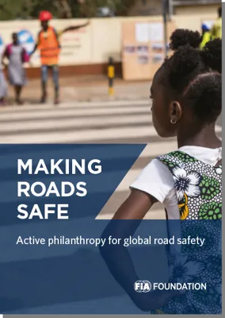
OUR IMPACT
1.3M KM
Star rating and infrastructure design to improve 1.3 million kilometres of road.
$80BN
Influencing US $80 Billion of investment to make road construction safer.
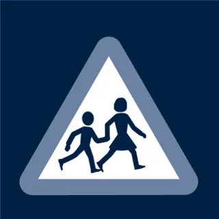
80,000
80,000 African children protected by fostering Amend’s SARSAI programme.
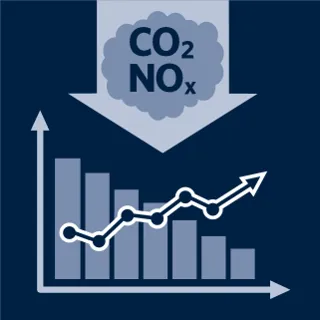
100
Advising 100 countries on data and policy with Global Fuel Economy Initiative (GFEI).
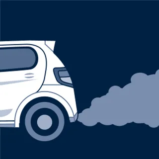
1M+
The Real Urban Emissions Initiative (TRUE) has an emissions database of over a million vehicles.
516
Contributed funding to 516 projects in 131 countries via the FIA Sport Grant Programme.
540
Funded 540 auto club initiatives in 97 countries with the FIA Road Safety Grants Programme.
300+
More than 300 cars crash-tested in emerging markets with Global NCAP.
SUBSCRIBE
Get inspiring stories about our mission, stay up-to-date on the latest news, and find out about ways you can make a difference.
Marketing Permissions
SUBSCRIBEGET INVOLVED. JOIN THE CONVERSATION